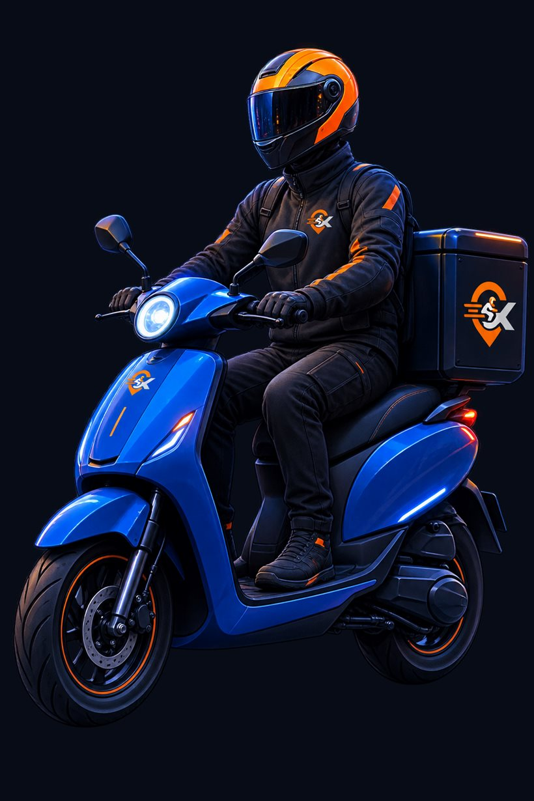

Binlerce aktif ilan arasından sana uygun olanı bul, hemen başvur ve işverenlerle doğrudan iletişime geç.
Android Uygulamamızı İndir
Her gün yeni iş ilanları yayınlanır ve kuryeler esnaflarla hızlıca buluşur.
Kuryeler, işletmeler ve firmalar tek platformda kolayca buluşur.
Bulunduğun bölgedeki ilanları keşfet, filtrele ve anında başvur.
Kurye ihtiyacını hızlıca yayınla ve başvuruları incele.
Birden fazla kurye ilanını yönet ve ekibini büyüt.
Sadece birkaç adımda sana uygun işleri bulmaya başlayabilirsin.
Kişisel bilgilerini, çalışma bölgelerini ve deneyimlerini ekle.
Bölgenizdeki aktif iş ilanlarını filtreleyin ve size uygun işleri bulun.
Tek tıkla başvurunuzu gönderin ve işverenle doğrudan konuşun.
Sana uygun deneyimi seç ve hemen başla.
Birden fazla kurye ilanını yönetin ve ekiplerinizi büyütün.
Kurye Firması Olarak Devam EtKuryemiBul ile bulunduğun bölgedeki iş fırsatlarını keşfet, başvur ve yeni işine daha hızlı ulaş.